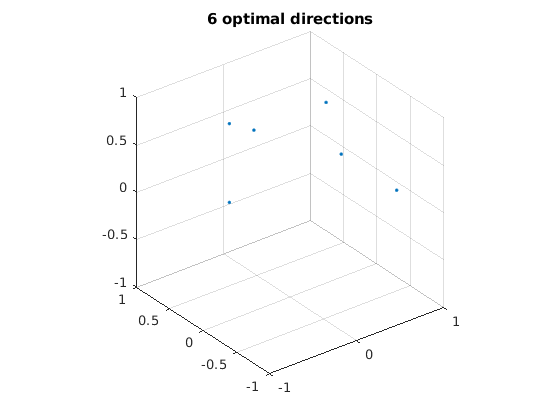
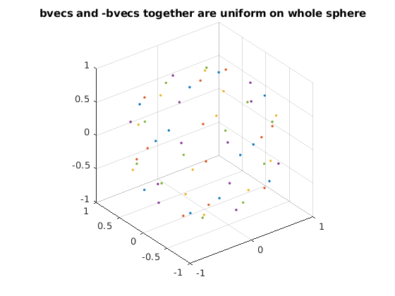
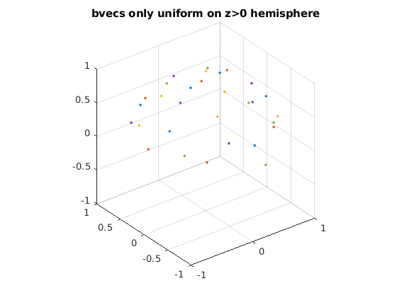
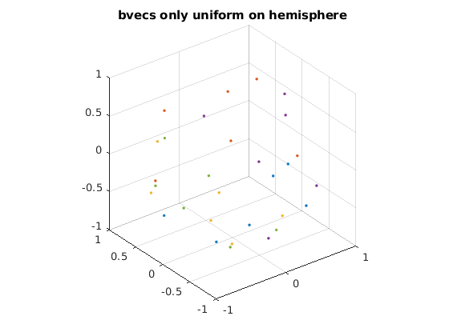
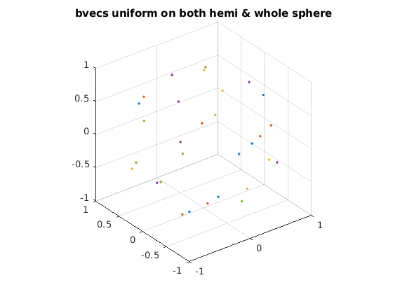

Contents
introduction
define a set of optimized encoding directions
clear, clc, close all
dsm6 = [0.91, 0.416, 0; ...
0, 0.91, 0.416; ...
0.416, 0, 0.91; ...
0.91, -0.416, 0; ...
0, 0.91, -0.416; ...
-0.416, 0, 0.91];
dsm6_norm = dsm6 ./ sqrt(dsm6(:, 1) .^ 2 + dsm6(:, 2) .^ 2 + dsm6(:, 3) .^ 2);
figure
plot3(dsm6_norm(:, 1), dsm6_norm(:, 2), dsm6_norm(:, 3), '.');
grid on, axis equal
xlim([-1, 1])
ylim([-1, 1])
zlim([-1, 1])
title('6 optimal directions');

design uniform bvecs on z>0 hemisphere
N = 5;
bvecs_hemi = [];
unif_min = 10^10;
for ii = 1 : 100000
dirs_all = [];
for jj = 1 : N
rotangs = rand(1, 3) * 2 * pi;
R = rot3d(rotangs);
dsm6_rot = (R * dsm6_norm')';
dirs_all = [dirs_all; dsm6_rot];
end
dirs_tmp = [dirs_all; -dirs_all];
unif = potentialenergy(dirs_tmp);
if unif < unif_min
unif_min = unif;
bvecs_hemi = dirs_all;
disp(unif_min)
end
end
n = size(bvecs_hemi, 1) / N;
figure;
for ii = 1 : N
idxs = (ii - 1) * n + 1;
idxe = ii * n;
bvecs_vis = bvecs_hemi(idxs:idxe, :);
bvecs_vis = [bvecs_vis; -bvecs_vis];
plot3(bvecs_vis(:, 1), bvecs_vis(:, 2), bvecs_vis(:, 3), '.');
hold on
end
grid on, axis equal
xlim([-1, 1])
ylim([-1, 1])
zlim([-1, 1])
title('bvecs and -bvecs together are uniform on whole sphere ');
figure
for ii = 1 : N
idxs = (ii - 1) * n + 1;
idxe = ii * n;
bvecs_vis = bvecs_hemi(idxs:idxe, :);
tmp = sign(bvecs_vis(:, 3));
tmp(tmp == 0) = 1;
bvecs_vis = bvecs_vis .* tmp;
plot3(bvecs_vis(:, 1), bvecs_vis(:, 2), bvecs_vis(:, 3), '.');
hold on
end
grid on, axis equal
xlim([-1, 1])
ylim([-1, 1])
zlim([-1, 1])
title('bvecs only uniform on z>0 hemisphere');
3.0007e+03
2.9875e+03
2.9866e+03
2.9518e+03
2.9339e+03
2.9078e+03
2.8946e+03
2.8929e+03
2.8852e+03
2.8820e+03
2.8778e+03
2.8759e+03
2.8757e+03
2.8683e+03
2.8566e+03
 
design uniform bvecs on a whole sphere
bvecs_whole = [];
unif_min = 10^10;
for ii = 1 : 100000
r = sign(rand(size(bvecs_hemi, 1), 1) - 0.5);
dirs_tmp = bvecs_hemi .* r;
unif = potentialenergy(dirs_tmp);
if unif < unif_min
unif_min = unif;
bvecs_whole = dirs_tmp;
disp(unif_min)
end
end
figure;
for ii = 1 : N
idxs = (ii - 1) * n + 1;
idxe = ii * n;
bvecs_vis = bvecs_hemi(idxs:idxe, :);
plot3(bvecs_vis(:, 1), bvecs_vis(:, 2), bvecs_vis(:, 3), '.');
hold on
end
grid on, axis equal
xlim([-1, 1])
ylim([-1, 1])
zlim([-1, 1])
title('bvecs only uniform on hemisphere');
figure
for ii = 1 : N
idxs = (ii - 1) * n + 1;
idxe = ii * n;
bvecs_vis = bvecs_whole(idxs:idxe, :);
plot3(bvecs_vis(:, 1), bvecs_vis(:, 2), bvecs_vis(:, 3), '.');
hold on
end
grid on, axis equal
xlim([-1, 1])
ylim([-1, 1])
zlim([-1, 1])
title('bvecs uniform on both hemi & whole sphere');
685.7500
684.0345
678.5069
674.1099
673.1246
669.8592
668.3636
666.6570
 
DeepDTI pipeline